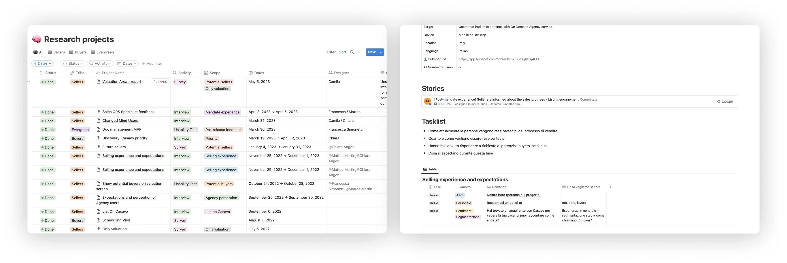

Building a design team
Casavo went from having no formal design practice to a fully operational team with clear roles, shared rituals, and a unified knowledge base — all within six months. Design decisions became visible, traceable, and trusted across the organisation.

When I joined Casavo, design barely existed. There were no defined roles, no shared rituals, and no agreed-upon deliverables. Engineering and Strategy had little visibility into what design was doing — or why.
The first challenge wasn’t designing screens. It was designing the team itself

We began by setting up a structured approach to our work, built around three core pillars: Responsibilities, Ceremonies, and Artifacts.
First, we clarified the responsibilities and boundaries of each role, creating a shared understanding of ownership across the team.
We then defined clear goals for our ceremonies, turning them into meaningful moments for sharing progress, aligning, and continuously improving the way we work.
Finally, we worked closely with Strategy and Engineering to better understand their needs from our design files. This led us to design a new structure and improve the overall organization of our deliverables, making them more accessible and effective for cross-team collaboration

We chose Notion as a single source of truth to document all our practices and decisions, and to use it as a repository for our data.
Specifically, for discovery activities, we defined three interconnected databases:
- Research Projects: which map each discovery activity, including the owner and date.
- Users: which contains all our users, along with their contact details and brief feedback.
- Insights: which includes a synthesis of the feedback gathered from research. We use it to align with Strategy and plan the next design activities
- Defined role boundaries for Product Designer and Content Designer, removing ambiguity that had caused duplicated effort and missed handoffs
- Designed and facilitated four recurring ceremonies, setting explicit success criteria for each so they never became empty rituals
- Negotiated a unified file and delivery structure with engineering and strategy leads, reducing rework at handoff by standardising what "done" looks like
Built three linked Notion databases: Research Projects and Users, Insights making the team's knowledge navigable and useful for planning
- Ran the first cross-functional UX Review, establishing it as a recurring space where design decisions were explained and challenged openly
The hardest part of building a design team isn’t design, it’s the politics.
Getting engineers and strategists to trust a new process requires consistency: showing up, again and again, before asking for anything in return.
The ceremonies only worked because I ran them rigorously, even when attendance was low.
I also learned that documentation is a form of design. The Notion system only became truly useful when I treated it like a product, with clear information architecture, defined ownership, and continuous feedback loops.
A repository no one uses is just organized clutter